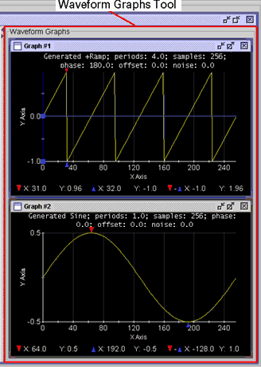
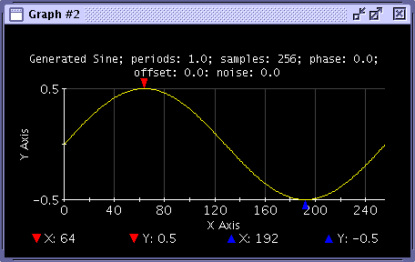

Waveform Graphs Tool
The Waveform Graphs Tool (WGT) appears to the right of the Waveform Navigator Tool (WNT) in the main window. The WGT is used to create, view, download, upload, and analyze waveforms.
Waveforms displayed in the selected graph table of the WNT are those displayed in the selected (active) Data Display Panel in the WGT.

In addition to the functions in the Menu Bar that control actions in the WGT, the toolbar provides the following functions:
Graph Customization

Hardware Access

Set Cursor Functions


Set Marker Functions


Slope Marker Functions

User Defined Functions
Within the toolbar area is the User Defined Panel functions. These functions are programmable using the Data Display API and DSP Test Method API. These functions are independent of the test program.

The following functions are provided:
- Apply FFT to displayed waveforms
- Calculate signal-to-noise plus distortion (SND)
- Calculate signal-to-noise ratio (SNR)
- Calculate total harmonic distortion (THD)
- Calculate mean
- Calculate standard deviation
- Calculate root mean square (RMS)
- Calculate jitter
- Calculate the difference between waveforms
- Auto scale waveforms to fit into one display
- Clear all traces displayed in the selected graph
- Copy specified trace of selected graph
- Paste copied trace into selected graph
- Edit trace data using your default editor
- Calculate the histogram of the specified waveform and display in a new graph
- View waveform stored in waveform memory of arbitrary analog modules
Much of the functionality can also be controlled programmatically using the Data Display API.